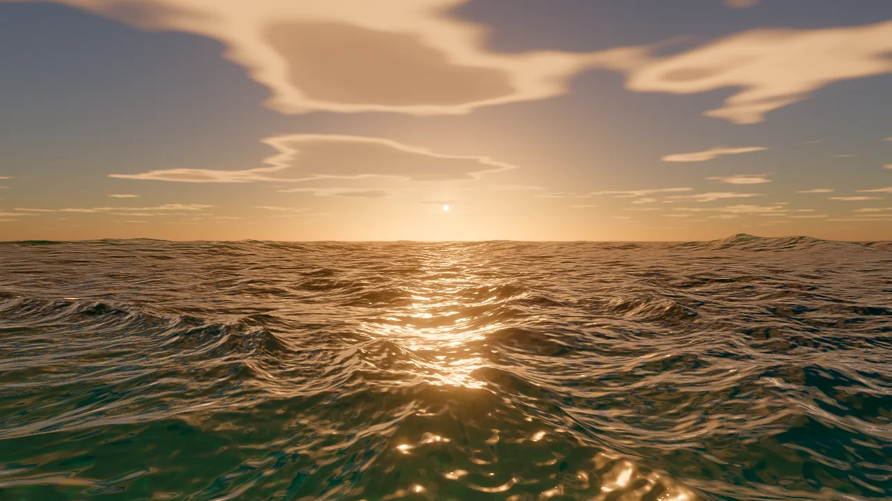
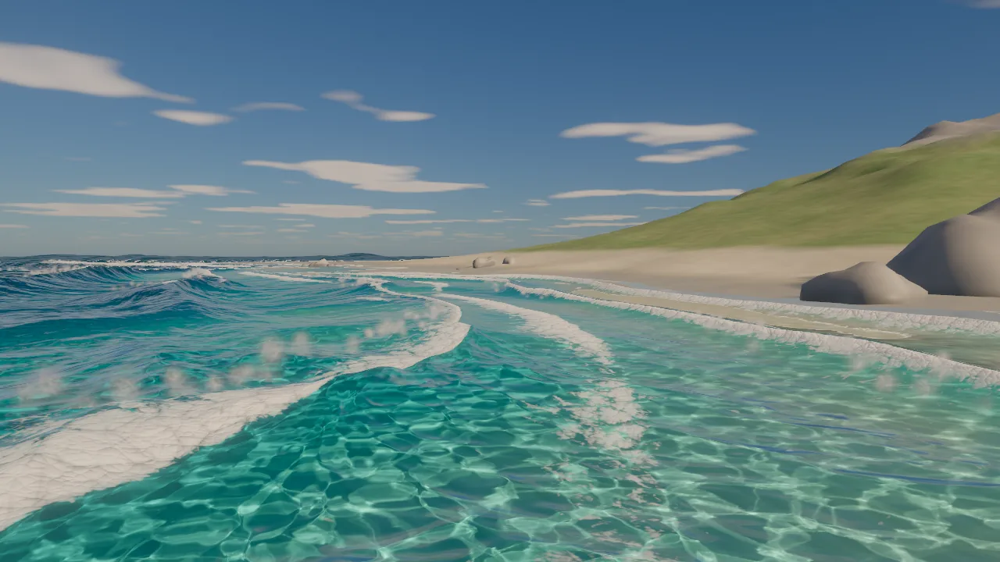
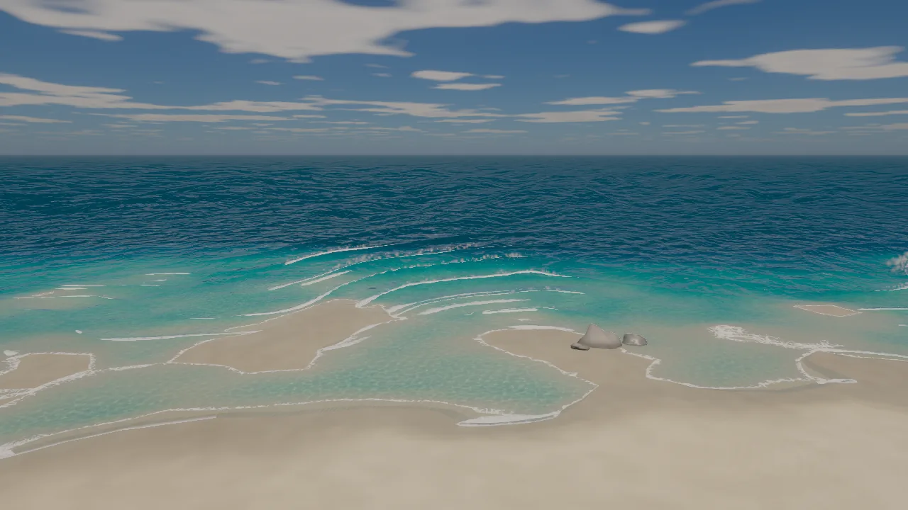
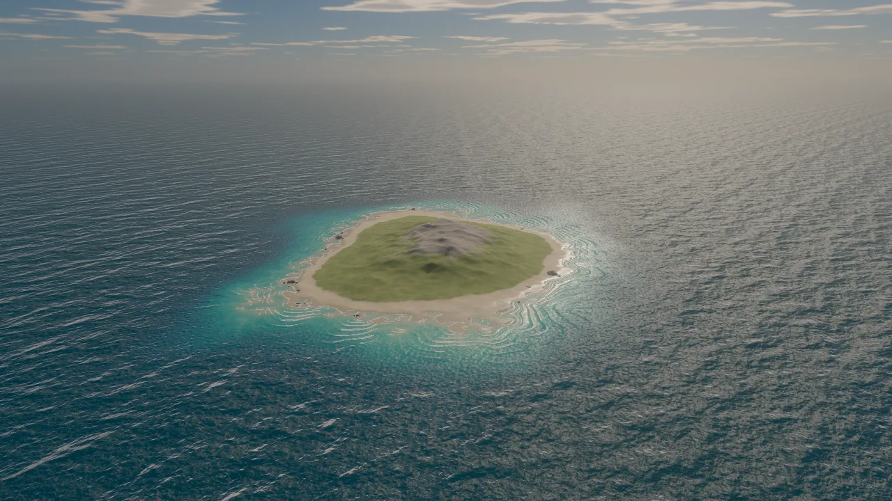
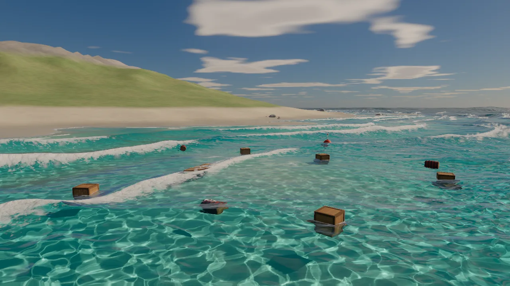
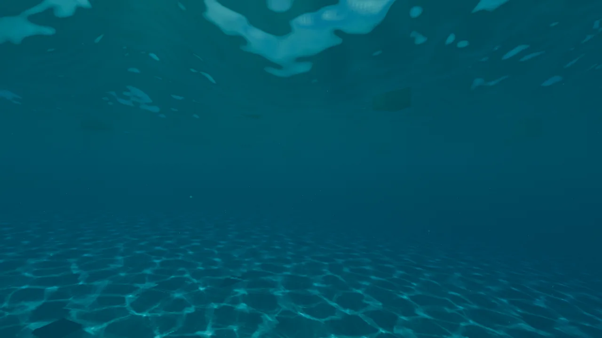

数据通过公开 GitHub API 获取，时间 2026-10-29 17:57（UTC+8）。仓库建于 2026-10-29 00:27（UTC+8）；12 个提交集中在 2026-10-28 21:58 到 10-29 07:03（UTC+8）之间，每一个都带 Co-Authored-By: Claude Opus 5.5。src/ 共 23 个 JS 文件，约 4,500 行。仓库没有设置主页，也没有在线演示，下文截图是本站在本地跑起来后截的。

npm run dev 后，用系统 Chrome 无头模式（SwiftShader 软件 WebGL2，无 GPU）打开 ?desktop，隐藏性能面板与设置面板后截图，压缩为 WebP。它是什么
Ultra Water 自称“为 three.js（WebGL2）打造的实时海洋渲染器，附一个海岛演示场景”。它不是一个可以 npm install 进你项目的库（没有发布到 npm，package.json 标着 private，名字还是早期的 gelatin-game-engine），而是一套完整的、可以读、可以拆的演示工程：海浪模拟、水面着色、近岸破浪、焦散、水下、漂浮物、大气天空、程序化岛屿和后期，全部是手写的 GLSL + three.js。
它值得看，是因为它把实时水面渲染里几乎所有“行业做法”都塞进了一个 4,500 行左右的仓库，而且 README 对每一项都给了出处：Tessendorf 的 FFT 海洋、JONSWAP 谱、Cox–Munk 斜率统计、LEAN 式粗糙度、Lagarde 的菲涅耳、Evan Wallace 的焦散、Hillaire 2020 的天空大气、AgX 色调映射。对想学海水着色器的人来说，这是一份带索引的参考实现。
打开后有七个镜头可选：Golden hour（黄金时刻，默认）、Breakers（破浪）、Lagoon（潟湖）、Open ocean（外海）、Aerial（航拍）、Flotsam（漂浮物）、Underwater（水下）。每个镜头会同时设定太阳位置。
它是怎么做的
下面按“一帧水面从哪里来”的顺序讲。数字来自 README 和源码（HEAD ce9248f）。
1. 海浪：四层 FFT，一层只管“毛糙”
深水海浪用 Tessendorf 的方法：先在频域里按海浪谱随机撒出一张“波的配方”，每帧让每个频率按自己的速度转相位，再做一次逆 FFT 变回高度和水平位移。Ultra Water 用了四个级联，边长分别是 600 m、85 m、12 m 和 2.1 m，每个 256×256，四张叠在一张 256×1024 的图集里，于是每一级 Stockham IFFT 只要一次多渲染目标（MRT）绘制。
- 谱：JONSWAP 风浪 + 一组远方来的涌浪，方向分布用 cos-2s。默认风速 9 m/s、风区 120 km；涌浪按 7 m/s 风速、900 km 风区计算，强度 0.7，方向 −15°；横向“尖锐度”（choppiness）0.85。JONSWAP 参数直接由风速和风区算出（α = 0.076·(gF/U²)−0.22，峰值角频率 ωp = 22·(UF/g²)−0.33）。
- 毛细波层：最小的 2.1 m 级联用的是毛细-重力色散 ω² = gk + (σ/ρ)k³（σ/ρ = 7.4×10⁻⁵），而且只用它的斜率、不用它的位移：厘米级的涟漪只改变光怎么反射，不值得推动顶点。12 m 级联会把自己 35 cm 以下的部分让给它，让叠起来的均方斜率仍贴近海洋学里的 Cox–Munk 测量。
- 不漂移的时间：所有 ω 都量化到 300 秒一圈，时间到 300 秒就回绕，32 位浮点相位不会随运行时间变糊。
- 泡沫和粗糙度：波面被挤压折叠的地方（位移场的雅可比行列式变小）生成泡沫，再按时间慢慢恢复。斜率按 (sx, sz, sx², sz²) 存，做 mipmap 后同时得到平均斜率和斜率方差。远处一个像素里装了很多小波，方差就转成“粗糙度”（LEAN 映射的思路），所以远海不会闪成一片噪点，而是自然变成模糊的光带。
2. 水面网格：跟着相机走的同心圆
水面是一张以相机为中心的极坐标网格（约 19 万个顶点），越往外环越宽，并随相机高度缩放。每个顶点按自己附近的网格间距，用 textureLod 选择合适的 mip 级别去读位移，太细的波不推顶点，于是远处的浪不会“游动”。代价写在 README 的“尚未实现”里：相机 1 m 以内是一个扇形，贴着水线时最近处会显得粗。
3. 着色：一个像素的水是怎么亮的
- 高光：四层法线加方差粗糙度，GGX 太阳高光，带岛和漂浮物的阴影；菲涅耳用 Lagarde 的粗糙度感知版本。
- 闪光（glints）：把 GGX 高光看成有限个小镜面，每个像素大小的格子按泊松分布抽出“恰好把太阳反进镜头”的镜面数，前后两次抽取交叉淡化，所以逆光海面会一闪一闪。截图里黄金时刻那条光柱就是它。
- 反射与折射：岛屿用半分辨率平面反射，叠在烘焙好的天空立方体上，按粗糙度模糊；折射会先校验深度，物体边缘平滑回退；水体颜色用 Beer-Lambert 按 RGB 分别吸收。六个颜色预设（清澈、热带、毒绿、紫、锈橙、浑褐）其实就是六组吸收系数、内散射颜色、薄泡沫色和水下浊度。
- 浪尖透光：Atlas 式的次表面散射，逆光时浪尖发绿。
4. 近岸破浪：先算“浪要多久才能到这里”
这是整个项目最有意思的一块。FFT 海浪是周期性的，不知道哪里是岸。Ultra Water 在浅水里换成另一套波：shoreMap.js 从海岸线出发，用快速扫描法（fast sweeping）解一个程函方程，波速取浅水波速 c = √(g·水深)，得到每一点的“旅行时间” τ。近岸波的相位写成 ω(τ + t)，于是：
- 水越浅、波越慢，波前自然地减速、聚拢、绕着海底地形折射，不需要手工摆波的方向；
- 波高按 Green 定律加“射线管”浅化放大，到水深 0.42 倍时破碎；面向涌浪的岸段浪组更大；
- 破碎点附近浪会前倾，浪唇半透明；但前倾量和 Gerstner 挤压共用一个预算，高度场永远不会折叠；
- 每道浪沿岸“剥离”（peeling）的先后都不同；两段岸线的波前相撞处（激波）让浪淡出，而不是叠成怪异的薄片；
- FFT 涌浪在浅水里淡出，交给这套近岸波。
泡沫也跟着浪走：浪尖白水贴在位移后的表面上，用一张以相速度向岸流动的流动贴图驱动，从“整片白”侵蚀成“有洞”再变成“蕾丝”，并留在碎浪区里慢慢漂向沙滩。浪冲上沙滩后以一层薄水膜退回，留下一条几秒后变干的湿线。
5. 焦散：把阳光“重新分配”到海底
沿用 Evan Wallace 的面积比方法：在 12 m 级联上铺一张网格，每个三角形按海面斜率折射后投到 1.5 m、4 m、10 m 三个深度平面上，落点三角形面积变小，光就变亮。因为只是把直射阳光重新分配，图案的平均亮度恒为 1。两个细节：斜率用三次 B 样条采样，否则焦散线会碎成一颗颗“珠子”；溅射目标开 4× MSAA，比一个纹素还细的光线折叠按覆盖率累加。海床、漂浮物和水下光束都按“折射后的入水点”查同一张焦散图，所以它们的光纹对得上。
6. 水下：斯涅尔窗、光束和海洋雪
水面网格是双面的。从水下往上看，头顶是一个圆形的“斯涅尔窗”：窗内是折射过来的天空和太阳，窗外是全内反射映出的深水色，窗的边缘按粗糙度虚化。相机靠近或低于水面时，再跑一个全屏 pass：逐像素判断水线，画出镜头前的弯月面，按 Beer-Lambert 消光，并用 24 步抖动的 Henyey-Greenstein 单次散射算半分辨率的阳光光束，光束同样透过焦散和阴影。另外有漂浮的“海洋雪”颗粒、水下曝光补偿，以及浮出水面后镜头上残留几秒的水滴。
7. 漂浮物：让 GPU 告诉 CPU 水有多高
木箱、木桶、浮标和小船是刚体。物理在 CPU 上以 240 Hz 子步运行：逐单元算浮力，按局部水流速度算阻力，碰到岛的高度场就搁浅。关键是水面高度从哪来：一个 512×1 的 GPU pass 用与渲染完全相同的公式计算水面，再通过 PBO + fence 异步回读，物理用的是上一帧的结果，所以渲染不会因为等回读而卡住。物体落水会激起 Cauchy–Poisson 涟漪环和水花。漂浮物还有自己的一张小阴影贴图（每帧贴合物体的正交相机），这样大的静态阴影图只在太阳移动时重画。
8. 天空、岛和一帧的顺序
天空用 Hillaire 2020 的大气模型（透射率、多重散射、天空视图三张 LUT，含臭氧），叠一层云；太阳移动时烘焙进一张 1024 的 HDR 立方体，同时当背景、反射、雾色和环境光用。岛是程序化的：生物群系着色、湿沙、会分叉和淡出的沙纹、水下按菲涅耳透射衰减的阳光。一帧的顺序是：取回上一次水面查询并步进漂浮物 → 漂浮物阴影 → 涟漪环 → FFT → 焦散 → 提交下一次查询 → 平面反射 → 不透明物体进 4× MSAA HDR 目标 → 水面（对保留的 MSAA 深度做深度测试）→ 水下 pass → 后期（对数空间自动曝光、双重滤波泛光、AgX、镜头水滴、TPDF 抖动）。
本站截图
以下均为本站本地运行后，用系统 Chrome 无头模式（SwiftShader 软件渲染）通过 window.app.views[...]() 切换机位截图，2026-10-29。软件渲染一帧要好几秒，所以这些是静帧，不代表实时效果，也不能用来判断帧率。





怎么跑起来
git clone https://github.com/Humpalumps/Ultra-Water
cd Ultra-Water
npm install
npm run dev # Vite 开发服务器，打开终端打印的 localhost 地址- 鼠标（或手指）环绕；右上角
camera下拉切换七个镜头；Sun & sky / Waves / Shore waves / Water / Floaters & underwater / Post / Quality 七个文件夹可以调风速、风向、风区、涌浪、浪高、颜色预设、泡沫、焦散强度、分辨率、MSAA、反射等。 - 左上角性能面板：
Uncap FPS让帧背靠背渲染，看机器上限；Run benchmark暂停场景、渲染 300 帧并用 fence 计时到 GPU 完成。 - 手机和平板会自动用轻量配置（分辨率 0.6、2× MSAA、反射 0.35、无泛光，加自动降分辨率）；URL 加
?mobile/?desktop可强制切换。 - 需要支持 WebGL2 的浏览器和像样的 GPU。本站在没有 GPU 的云主机上用软件渲染也能出画面，但约 9 秒一帧。
性能：作者自测
README 给的数字是：RTX 3060、Chrome（ANGLE/D3D11）、4× MSAA、全部特性开启、3.3 MP（1954×1692），七个镜头 3.30–4.80 ms/帧，约 208–303 fps；Breakers 镜头里水面 1.66 ms、不透明物体 1.21、后期 0.37、焦散 0.24、FFT 约 0.45。一加 Nord 4 竖屏 424×782 用手机配置，七个镜头都是 60 fps 不丢帧，不锁帧 95–142 fps。
⚠️ 这些都是作者自报，本站没有 GPU，无法复测。作者自己也写了几个保留：浪尖泡沫升级是在测量之后合入的，“还没有干净地重测”；早期 README 的数字因为同步方式错误低了 2–4 倍；手机数字受温度影响，是充电、温热状态下测的。仓库描述里的“200+ fps”指的是 RTX 3060、3.3 MP 这个条件。
局限与注意
- 作者列出的未实现：移动物体没有尾迹（漂浮物只在落水时激起涟漪和水花）；漂浮物之间不碰撞；破浪是高度场，只会前倾，卷不成管浪；相机 1 m 以内网格粗。
- 它是演示工程，不是库：没有 npm 包、没有 API 文档、没有测试；要用到自己的项目里，需要从
src/water/里拆。⚠️ 推断：海浪、焦散、破浪都和这座岛的高度场、相机、后期管线耦合较紧，迁移成本不低。 - 非常新：写作时仓库只有约 18 小时，12 个提交，0 个 issue，作者账号 2026 年 1 月注册、2 位关注者。
package.json名称、HTML 标题和 GUI 标题仍是 “Gelatin Game Engine / Gelatin Water”，说明它是从一个更大的个人项目里剥出来的（⚠️ 推断）。 - AI 协作写成：所有提交都署了 Claude Opus 5.5 为共同作者，仓库里还有 Claude Code 的
.claude/launch.json；README 末尾说设计“在动手前和另一个智能体争论过一遍，之后每一轮升级再争论一遍”。这不影响许可，但意味着这是一个人加 AI 在一夜之间完成的作品，代码的长期维护情况未知。 - 无付费依赖、无广告：运行时只依赖 three.js 和 lil-gui（均为 MIT，见各自
node_modules），没有外部素材下载、没有遥测、没有推广链接。纹理（泡沫、天空等）都是运行时烘焙或程序生成的（读bakeTextures.js、atmosphere.js所得）。
许可与第三方代码
项目为 MIT，Copyright (c) 2026 Humpalumps。THIRD_PARTY_NOTICES.md 列出三处改编代码，均为 MIT：
- three.js：
sky.js的云层改编自 three 的Sky.js；PostFX.js的 AgX 色调映射与 three 的AgXToneMapping同一套数学（后者又基于 Filament，Filament 沿用 Blender）。 - Dave Hoskins「Hash without Sine」（Shadertoy 4djSRW）：
hash33与gradient。 - Sébastien Hillaire / Epic Games「UnrealEngineSkyAtmosphere」：
atmosphere.js按这份 Hillaire 2020 参考实现的结构编写。
README 还点名参考了 Evan Wallace（焦散）、Tessendorf、JONSWAP、Cox–Munk、LEAN、Lagarde、Green 定律等公开方法和论文，这些属于算法思路，不涉及代码转载。本页按 MIT 许可转载 README 全文中译（附录一），并附 LICENSE 原文与第三方声明原文（附录二）。截图为本站自行运行项目所得。
核实与风险
- ✅ MIT 许可、三处第三方 MIT 代码、12 个提交均带 Claude Opus 5.5 共同作者、★197 / 28 forks（2026-10-29 17:57 UTC+8 公开 API）。
- ✅ 代码里的关键参数与 README 一致：四个级联 600/85/12/2.1 m、N = 256、300 秒循环、σ/ρ = 7.4×10⁻⁵、默认风速 9 m/s、风区 120 km、六个颜色预设、七个镜头。
- ✅ 本站实跑：
npm install+npm run dev可以启动，七个镜头里的六个已截图（Open ocean 未截），画面与 README 描述相符：黄金时刻光柱与闪光、破浪泡沫与水花、潟湖浅水色、航拍岛屿、漂浮物、水下焦散；水下光束在软件渲染截图里不明显。 - ⚠️ 未核实：所有 fps / 毫秒数（RTX 3060 与一加 Nord 4）均为作者自报，本站无 GPU 无法复测；泡沫升级后的开销“未干净重测”是作者原话。
- ⚠️ 未核实：“设计与另一个智能体争论”的过程没有公开记录。
- ⚠️ 推断：“AAA foam”（提交说明用语）是作者自评，不是第三方评价。
- ⚠️ 推断：项目是从更大的 “Gelatin” 引擎里剥出来的，迁移进其他 three.js 项目需要拆分改造。
站内相关
- Techartist《Every Joule》3D 能量物理书：同样是 Three.js 作者，GitHub 上另有 FFT/JONSWAP 海洋与浅水方程海岸模拟仓库，可以对照着读。
- 余温：Opus 5.5 + Hi3D 通宵搓 3D 海战游戏：游戏里的海水着色器是“够用就好”的路线，和这里的“物理正确”路线形成对比。
- 木马人：一个人用 AI 做 3D 武侠 ARPG：Claude Opus 5.5 + Three.js 写游戏的另一个例子。
- Shanshui：代码画出的水墨山水：同为 WebGL2 着色器零素材作品，一个走写实物理，一个走笔墨风格。
- ascii-sharks：另一种“海”，鱼群模拟加 ASCII 栅格化。
附录一 · README 全文中译
译自仓库 README.md（HEAD ce9248f，2026-10-29 07:03 UTC+8）。原文 MIT 许可，Copyright (c) 2026 Humpalumps；译文依 MIT 转载，保留版权与许可声明（见附录二）。代码标识、文件名、GUI 选项名保留英文。
Ultra Water
为 three.js（WebGL2）打造的实时海洋渲染器，附一个海岛演示场景。
npm install npm run dev打开终端里打印出的 localhost 地址。用鼠标环绕观察（也可以用手指：手机有自己的配置档，见手机与平板）。从
camera下拉菜单里选镜头（它们也会一并设定太阳）。性能面板（左上角）显示 GPU、渲染尺寸、fps、每帧毫秒数和一条 20 秒曲线。它的Uncap FPS按钮让渲染循环脱离显示器刷新：帧会背靠背地渲染，GPU 上最多同时有三帧在途，于是计数器显示的是这台机器的能力，而场景仍在实时运行。屏幕本身仍按自己的刷新率更新。Cap to display切换回来。Run benchmark（设置里也有benchmark (uncapped)）会在暂停渲染循环的情况下背靠背渲染 300 帧，并用 fence 计时到 GPU 完成。运行期间屏幕会冻结约一秒，所以只在你要求时才运行。性能
用页内基准测得，RTX 3060（Chrome，ANGLE/D3D11），4× MSAA，所有特性开启，分辨率 1954×1692（3.3 MP，相当于 1440p 的像素数；浏览器窗口
devicePixelRatio为 2）：
镜头 毫秒 / 帧 fps（不锁帧） Open ocean（外海） 3.30 ~303 Breakers（破浪） 4.17 ~240 Golden hour（黄金时刻） 4.20 ~238 Lagoon（潟湖） 4.48 ~223 Flotsam（漂浮物，10 个漂浮道具） 4.62 ~217 Underwater（水下） 4.71 ~212 Aerial（航拍） 4.80 ~208 Breakers 镜头下各 pass 耗时：水面 1.66 ms，不透明物体（岛、岩石、道具）1.21，后期 0.37，焦散 0.24，FFT 模拟约 0.45（与分辨率无关）。太阳很低时焦散更贵（太阳高度角 3.5° 时约 0.36 ms），因为折射光线折叠得更厉害。
浪尖泡沫的升级是在这次测量之后才合入的。它只在每个泡沫像素上增加三次纹理采样和一些 ALU 运算。它还没有被干净地重新测量过，因为当时有另一个应用在占用 GPU。
这份 README 的早期版本给出的数字要低 2–4 倍。那些数字来自一个用
readPixels/finish同步的基准，而 ANGLE 并不会等待它们。基于 fence 的基准才是可信的。HUD 上的 GPU 计时查询数字在锁定垂直同步时会偏高，因为 GPU 在帧与帧之间会降频。手机与平板
同一个构建会识别手机和平板（以手指为主指针，
matchMedia('(pointer: coarse)')），并让它们从一个更轻的配置档起步。桌面端不变。在 URL 后加?mobile或?desktop可以强制任一档。移动配置档是：分辨率 0.6（相对设备像素比，上限 2）、2× MSAA、反射 0.35 倍缩放、无泛光（bloom）。在手机上，开销主要来自 Chrome 的 GPU 进程需要转译的渲染 pass 数量，而不是像素，所以去掉泛光的 12 个 pass 比降低分辨率更有效。自动分辨率（Quality 文件夹里的
auto resolution）在 2 秒内有超过 4% 的帧错过垂直同步时，按 0.05 一步向下调，下限 0.5。帧干净后再爬回 0.6；如果到了下限仍有超过四分之一的帧错过，就锁定为稳定的 30 fps。在一加 Nord 4（骁龙 7+ Gen 3，Adreno 732，Chrome 156，在这台手机上页面以 60 Hz 运行）上竖屏、424×782 测得：
镜头 实时 fps 丢帧 fps（不锁帧） Open ocean 60 0% 142 Aerial 60 0% 118 Underwater 60 0% 103 Lagoon 60 0% 102 Flotsam 60 0% 101 Golden hour 60 0% 99 Breakers 60 0% 95 用桌面设置（708×1304、4× MSAA、泛光）时，同一台手机实时跑 41–50 fps，最多丢掉三分之一的帧，不锁帧平均 62 fps。手机的数字会随温度变化。这些是在温热状态（thermal status 1）、通过 USB 充电时测得的。
里面有什么
波浪（
src/water/OceanSim.js）
- Tessendorf FFT，4 个级联，尺寸分别为 600 / 85 / 12 / 2.1 m，每个 256²，叠放在一张 256×1024 的图集里，因此每一级 Stockham IFFT 只需一次 MRT 绘制。
- 2.1 m 级联是毛细波波段。它使用毛细-重力色散关系（ω² = gk + σk³/ρ），并且只使用它的斜率，不使用它的位移。12 m 级联把自己 35 cm 以下的波段交给它（
capillaryFade，经过校准，使叠加后的均方斜率保持在 Cox–Munk 附近）。- JONSWAP 风浪加涌浪，cos-2s 方向扩展。
- ω 被量化到 300 秒的循环上，所以 fp32 相位永远不会漂移。
- 泡沫来自雅可比行列式，并按 dt 恢复。
- 斜率以 (sx, sz, sx², sz²) 存储。它们的 mip 给出用于粗糙度的斜率方差（LEAN 风格）。每个级联的 1×1 mip 就是它的均方斜率，再把该风速下 Cox–Munk 的剩余部分作为未解析的粗糙度加上去。
表面（
src/water/OceanSurface.js）
- 一张以摄像机为中心的极坐标网格（约 19 万顶点），环带按几何级数变宽，并随摄像机高度缩放。位移用
textureLod限制在局部顶点间距对应的频带内，所以不会“游动”。- 逐像素着色：
- 来自 4 个级联的法线与方差粗糙度、几何镜面抗锯齿、Lagarde 的粗糙度感知菲涅耳。
- GGX 太阳高光，带岛屿和漂浮物的阴影。
- 闪光（glints）：把 GGX 波瓣当作有限数量的微面。每个像素大小的单元抽取泊松分布数量的、正好镜像太阳的微面，它们在多次抽取之间交叉淡化，所以会闪烁。
- 半分辨率、带 mipmap 的岛屿平面反射，叠在天空立方体之上，按粗糙度模糊。
- 经深度校验的折射，物体边缘有平滑回退；Beer-Lambert 吸收；浪尖上的 Atlas 式次表面散射；以及大气透视。
- 近岸破浪运行在一个程函（eikonal）旅行时间场上（
shoreMap.js：从海岸开始用 c = √(g·depth) 做快速扫描，然后求方向、波前曲率和射线管浅化因子）：
- 相位为 ω(τ + t)，所以波前会减速、聚拢，并绕着海底地形折射。
- Green 定律加射线管浅化，破碎极限为 0.42 × 水深，面向涌浪的海岸浪组更大。
- 破碎点附近的卷倒前倾，浪唇半透明。前倾量与两组波列的 Gerstner 挤压共享同一个预算，所以高度场永远不会自我折叠。
- 剥离（peeling）：每道浪峰在一些段落提前破碎、在另一些段落推后破碎，每道浪的布局都不同。
- 两段海岸的波前相遇处（激波），波浪会淡出，而不是折叠成片。
- 泡沫：
- 烘焙的泡沫纹理包含蕾丝花纹，外加“花椰菜”状的翻涌高度及其梯度。
- 浪尖白水贴在位移后的表面上，使用一张随相速度朝岸边流动的世界空间流动贴图。它的两个相位交叉淡化，这也让它翻腾起来。
- 覆盖率随时间侵蚀：从实心白水，到出现孔洞，再到蕾丝。翻涌凸起会扰动法线并给褶皱着色。薄泡沫会被其下方的水染色，逆光时发亮。气泡顶部带一点光泽。
- 蕾丝会留在碎浪区并朝岸边漂移。
- 海滩冲流（与地形共用 GLSL）：每道涌潮冲上沙滩，再以带泡沫边缘的薄水膜退回，留下一条几秒内变干的湿线。
- 撞击波纹环：漂浮物砸到水面时会激起 Cauchy–Poisson 涟漪环，以及一圈飞溅水冠（
Spray.js）。- FFT 涌浪在浅水中淡出，由近岸波浪接手。
焦散（
src/water/Caustics.js）
- 面积比溅射（参考 Evan Wallace）：在 12 m 级联上铺一张网格，按其斜率折射，投到 1.5、4 和 10 m 深的平面上。每个落下的三角形累加它的面积比，所以图案均值为 1，只是重新分配直射阳光。
- 斜率用三次 B 样条采样。如果用双线性采样，每个斜率纹素都会沿焦散线落成一颗单独的“珠子”。
- 两个溅射目标都是 4× MSAA，所以比一个纹素还细的折叠细条会按覆盖率累加，而不是碎成点。它们的尺寸按各深度处太阳圆盘造成的模糊来定：1.5 m 用 512²（2.3 cm），4 m 和 10 m 用 256²。
- 查找经过折射后的入水点，所以海床、道具和水下光束看到的是同一套图案。
水下（
src/water/UnderwaterPass.js，以及OceanSurface.js中的水面下侧分支）
- 水面网格是双面的。从下方看时，它着色出斯涅尔窗（Snell's window）：
- 折射方向上的天空、作为 GGX 透射波瓣的太阳，以及帧中水面以上的任何东西。
- 窗外，全内反射映出深水的颜色。
- 临界角边缘按粗糙度模糊。
- 当摄像机靠近或低于水面时，运行一个全屏 pass：
- 逐像素的水线分割。水面 pass 在 alpha 中标记每个像素看到的是什么；其他地方使用一个粗糙的 64×36 镜头深度目标。
- 镜头附近水面上下两侧相接处的一条弯月面线。
- 朝向与水面下侧一致的内散射颜色做 Beer-Lambert 消光。
- 半分辨率的阳光光束：24 个抖动步长的 Henyey-Greenstein 单次散射，在每个采样点对应的水面入射点处，经由波浪焦散以及地形和漂浮物阴影照亮，再用深度感知的 4 采样上采样。
- 海洋雪（
MarineSnow.js）、水下曝光补偿（underwater exposure），以及浮出水面后几秒内镜头上的水滴。漂浮物（
src/water/WaterQuery.js、src/scene/floaters.js、src/scene/floaterMeshes.js、src/scene/floaterShadow.js）
- 水面高度来自 GPU。一个 512×1 的 pass 精确地计算与渲染出来的同一个水面，并以异步方式回读（PBO + fence），所以永远不会卡住。
- 刚体（木箱、木桶、浮标、小船）：
- 逐单元浮力，以及相对局部水流速度的阻力。
- 240 Hz 子步。
- 与岛屿高度场的接触，用于搁浅。
- 漂浮物有自己的太阳阴影贴图：一台每帧贴合这些物体的正交相机，所以大的静态阴影贴图永远不需要重新渲染。水面、地形（水下时在折射入射点处读取）和光束都会读取它。
管线（
src/main.js）
- 取回上一次的水面查询结果，步进漂浮物，然后：
- 渲染漂浮物阴影贴图；
- 更新撞击波纹环；
- 运行 FFT；
- 溅射焦散；
- 提交下一次查询。
- 平面反射（半分辨率，水下时跳过）。
- 不透明 pass，渲染进同一个 4× MSAA HDR 目标。
- 水面 pass，与保留下来的 MSAA 深度做深度测试，得到正确的逐采样边缘。
- 水下 pass，摄像机靠近或低于水面时运行。
- 后期（
PostFX.js）：
- GPU 自动曝光，在对数空间测光并随时间适应；GUI 里的值是补偿量。
- 带 Karis 平均的双重滤波泛光。
- AgX。
- 镜头水滴。
- TPDF 抖动。
场景
- Hillaire 2020 大气（
atmosphere.js）：透射率、多重散射和天空视图 LUT，含臭氧。云叠在上面。太阳移动时，它被烘焙进一个带 mipmap 的 1024 HDR 立方体，用作背景、反射、雾色和 IBL。- 程序化岛屿，带有：
- 生物群系着色与湿沙。
- 冲流水膜与湿线。
- 波浪塑造的沙纹，纹峰会蜿蜒、分叉，并成片淡出。
- 水下以折射方式到达的阳光，经菲涅耳透射减弱，并沿路径被吸收。两张阴影贴图都在水面入射点读取，所以迎着太阳方向的沙洲不会把整片海床都遮住。
- 波浪焦散。
- 实例化岩石。静态阴影贴图只在太阳移动时重新渲染。
Water文件夹有一个colour preset下拉菜单（clear 清澈、tropical 热带、toxic green 毒绿、purple 紫、rust orange 锈橙、murky brown 浑褐）。每个预设会同时设定吸收、内散射颜色、薄泡沫色调和水下散射；clarity和scatter仍可在此之上调节。镜头预设
Flotsam和Underwater会生成一片漂浮道具。Floaters & underwater文件夹有生成、投放和清除按钮，以及阻力、浮力、散射、光束和弯月面的控制项。尚未实现
- 移动物体后方的尾迹。漂浮物只在落水时扰动水面（波纹环和飞溅）。
- 漂浮物之间不会相互碰撞。
- 破浪是高度场波浪，所以只会前倾，永远不会卷成管浪。
- 摄像机 1 m 以内的水面网格是一个扇形，所以贴着水线时，镜头正前方的细节比较粗。
设计在动手构建之前和另一个智能体争论过一遍，之后每一轮升级又各争论一遍。
许可
MIT，见 LICENSE。从其他项目改编的代码列在 THIRD_PARTY_NOTICES.md 中。
附录二 · 许可证与第三方声明原文
MIT 许可声明原文（LICENSE）
MIT License
Copyright (c) 2026 Humpalumps
Permission is hereby granted, free of charge, to any person obtaining a copy
of this software and associated documentation files (the "Software"), to deal
in the Software without restriction, including without limitation the rights
to use, copy, modify, merge, publish, distribute, sublicense, and/or sell
copies of the Software, and to permit persons to whom the Software is
furnished to do so, subject to the following conditions:
The above copyright notice and this permission notice shall be included in all
copies or substantial portions of the Software.
THE SOFTWARE IS PROVIDED "AS IS", WITHOUT WARRANTY OF ANY KIND, EXPRESS OR
IMPLIED, INCLUDING BUT NOT LIMITED TO THE WARRANTIES OF MERCHANTABILITY,
FITNESS FOR A PARTICULAR PURPOSE AND NONINFRINGEMENT. IN NO EVENT SHALL THE
AUTHORS OR COPYRIGHT HOLDERS BE LIABLE FOR ANY CLAIM, DAMAGES OR OTHER
LIABILITY, WHETHER IN AN ACTION OF CONTRACT, TORT OR OTHERWISE, ARISING FROM,
OUT OF OR IN CONNECTION WITH THE SOFTWARE OR THE USE OR OTHER DEALINGS IN THE
SOFTWARE.
第三方声明原文（THIRD_PARTY_NOTICES.md）
# Third-party notices
Ultra Water is MIT licensed (see [LICENSE](LICENSE)). A few small pieces of its code are adapted from the MIT-licensed projects below. Their copyright notices are kept here, as their licences require. The MIT licence text that applies to each of them is at the end of this file.
Runtime dependencies (three.js, lil-gui) are installed from npm and carry their own licences in `node_modules`.
## three.js
- Source: https://github.com/mrdoob/three.js
- Used in: `src/scene/sky.js` (cloud layer, adapted from `Sky.js`) and `src/engine/PostFX.js` (AgX tone mapping, same maths as three's `AgXToneMapping` chunk. That chunk is itself based on Filament's AgX, which follows Blender's).
- Copyright © 2010-2026 three.js authors
- MIT License
## Hash without Sine (Dave Hoskins)
- Source: https://www.shadertoy.com/view/4djSRW
- Used in: `src/engine/PostFX.js` (`hash33`) and `src/scene/sky.js` (`gradient`)
- Copyright (c) 2014 David Hoskins
- MIT License
## UnrealEngineSkyAtmosphere (Sébastien Hillaire)
- Source: https://github.com/sebh/UnrealEngineSkyAtmosphere
- Used in: `src/scene/atmosphere.js`, which follows the structure of this reference implementation of Hillaire 2020, "A Scalable and Production Ready Sky and Atmosphere Rendering Technique".
- Copyright (c) 2020 Epic Games, Inc.
- MIT License
## MIT License
Permission is hereby granted, free of charge, to any person obtaining a copy
of this software and associated documentation files (the "Software"), to deal
in the Software without restriction, including without limitation the rights
to use, copy, modify, merge, publish, distribute, sublicense, and/or sell
copies of the Software, and to permit persons to whom the Software is
furnished to do so, subject to the following conditions:
The above copyright notice and this permission notice shall be included in all
copies or substantial portions of the Software.
THE SOFTWARE IS PROVIDED "AS IS", WITHOUT WARRANTY OF ANY KIND, EXPRESS OR
IMPLIED, INCLUDING BUT NOT LIMITED TO THE WARRANTIES OF MERCHANTABILITY,
FITNESS FOR A PARTICULAR PURPOSE AND NONINFRINGEMENT. IN NO EVENT SHALL THE
AUTHORS OR COPYRIGHT HOLDERS BE LIABLE FOR ANY CLAIM, DAMAGES OR OTHER
LIABILITY, WHETHER IN AN ACTION OF CONTRACT, TORT OR OTHERWISE, ARISING FROM,
OUT OF OR IN CONNECTION WITH THE SOFTWARE OR THE USE OR OTHER DEALINGS IN THE
SOFTWARE.